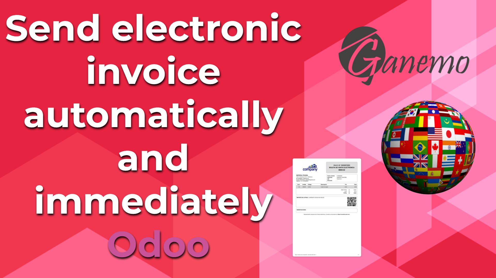

<section class="oe_container oe_dark">
    <div class="oe_row oe_spaced">
        <div class="oe_span8">
            
        </div>
        <div class="oe_span8">
            <span>
                This is a new module of the "odoo_edi" repo, which aims to automate the sending of the .xml to the
                validating entity. In each Sales Diary, we will add a new boolean, with label: "Automatic delivery", which will
                only be activated if a) The boolean "Use Documents?" is True. If this field is active in the journal, that after
                the Invoice is Posted, Odoo immediately executes the "Send Now" action of the invoice. It is applicable to the
                localization of electronic invoicing of several Countries that depend on the account_edi module.
            </span>
        </div>
    </div>
</section>
